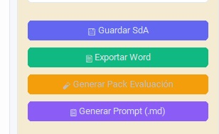
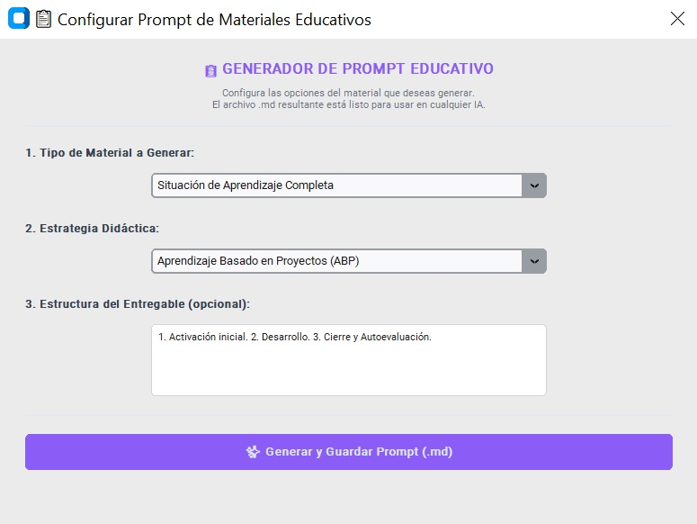

¿Qué es un archivo Markdown.md?
Un archivo Markdown (.md) es un formato de texto plano estructurado que utiliza símbolos sencillos (como asteriscos, guiones o almohadillas) para dar formato al texto (encabezados, listas, negritas) de forma ligera, universal y fácilmente legible tanto por seres humanos como por sistemas informáticos.
En el ecosistema de la inteligencia artificial, el formato Markdown se ha consolidado como el estándar internacional de comunicación de contexto. A diferencia de un archivo de Word (.docx) o un PDF, que contienen metadatos y estructuras complejas que pueden "ruidosas" para un modelo de lenguaje, un archivo .md entrega la información de manera limpia, directa y jerarquizada.
La importancia de los archivos Markdown generados por ALMENDRA reside en su contenido hiper-enriquecido:
- Inyección Completa de Contexto: El archivo .md no es un prompt maestro que condensa en un solo bloque los saberes básicos, criterios de evaluación y cCompetencias específicas exactos de la ley aragonesa, combinados con la radiografía analítica de las debilidades y necesidades DUA de tu grupo real.
- Optimización del Rendimiento de la IA: Los modelos de Inteligencia Artificial (como ChatGPT, Claude o versiones web de Gemini) funcionan bajo el principio de "A mejor contexto, mejor respuesta»"Al recibir un mapa de datos tan preciso y estructurado en Markdown, la IA exógena comprende de inmediato las restricciones pedagógicas y normativas, eliminando las alucinaciones y generando recursos educativos con un nivel de idoneidad y rigor imposible de alcanzar mediante peticiones convencionales.
- Eficiencia Temporal: Ahorra al docente decenas de horas de redacción manual de instrucciones complejas (prompt engineering), condensando todo el conocimiento normativo y del aula en un simple archivo listo para "copiar y pegar"
Motor de generación archivos markdown (prompt maestros)
La producción de ficheros en formato Markdown (.md) dentro del ecosistema ALMENDRA responde a una estrategia de interoperabilidad y desacoplamiento tecnológico. Estos archivos operan como "Prompts Maestros" hiper-enriquecidos. El sistema compila y estructura el entorno normativo y analítico local para que el equipo docente pueda exportarlo y ejecutarlo de forma óptima en cualquier modelo de lenguaje externo (ej., ChatGPT, Claude o entornos corporativos de Gemini), garantizando un despliegue adaptativo fuera de la aplicación.

Ingesta de datos y mapeo desde la capa relacional
Todo el contenido semántico y de contexto inyectado en el fichero Markdown procede directamente de las parametrizaciones del docente cruzadas con las tablas de la base de datos. La información se estructura en tres bloques informacionales estancos:
- Bloque Curricular LOMLOE: Inyección explícita de las variables macro de la normativa educativa: etapa, denominación oficial de la asignatura, el desglose de saberes bBásicos implicados y el mapa de competencias específicas junto a sus criterios de evaluación asociados, formateados de manera estructurada bajo notación JSON para conservar su anidamiento normativo.
- Bloque Analítico del Aula: Extracción estadística de los estudiantes asociados al grupo matriculado. El programa vuelca en el prompt el listado de "descriptores operativos fFlojos" (brechas y debilidades colectivas del aula) junto con la matriz de adaptaciones universales y de acceso recomendadas por el Marco DUA en función de los perfiles de alumnado NEAE / ACNEAE detectados.
- Bloque de Instrucción: Variables operativas seleccionadas por el docente que definen la tipología de recurso pretendido (ej., "Prueba Escrita Adaptada", "Guía de Trabajo Cooperativo"), la estrategia o metodología didáctica de tracción (ej., "Flipped Classroom") y la secuenciación detallada de los pasos requeridos.
Ventana emergente para afinado de prompt maestro en formato Markdown.md
Desacoplamiento de la capa generativa activa
En la fase de generación del archivo .md no existe intervención activa de modelos de inteligencia artificial. El valor diferencial del software radica en su comportamiento como un ingeniero de prompts determinista.
ALMENDRA absorbe la complejidad técnica del mapeo legal (LOMLOE) y el coste administrativo del análisis estadístico del grupo-clase para entregar un contenedor de contexto impecable. La meta operativa de este formato radica en maximizar la eficiencia temporal del docente, proveyendo de manera ágil y concentrada tanto el marco curricular prescriptivo como la radiografía analítica de la diversidad de su aula. El procesamiento heurístico o creativo se desplaza al exterior de la aplicación: el docente copia el código Markdown generado y lo transfiere a su interfaz de IA de preferencia. Al recibir este mapa de contexto hiper-preciso, blindado y libre de alucinaciones normativas, el modelo lingüístico externo optimiza drásticamente la calidad de sus respuestas, generando un material educativo final con un nivel de personalización y exactitud muy elevado y que mediante un modelado de directrices convencional supondría al docente una elevada carga de trabajo extra.